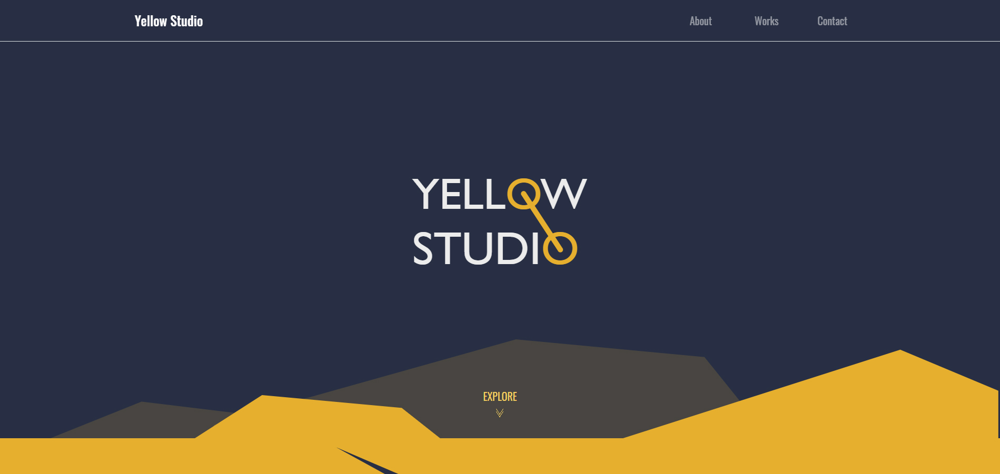
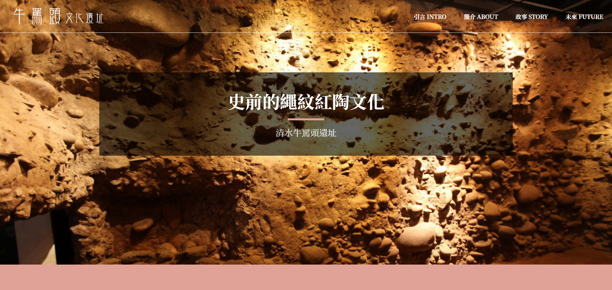

<!DOCTYPE html><html lang="zh-tw"></html><head><meta charset="UTF-8"><meta http-equiv="X-UA-compatible" content="ie=edge,chrome=1"><meta name="viewport" content="width=device-width" height="device-height" initial-scale="1" minimum-scale="1" maximum-scale="1" user-scalable="no"><title>Jack Huang RESUME</title><meta name="description" content="黃俊傑的個人網站"><meta name="author" content="黃俊傑"><meta property="og:title" content="黃俊傑的個人網站"><meta property="og:description" content="自己架設的履歷網站"><meta property="og:type" content="website"><meta property="og:url" content="https://jack842248.github.io/"><meta property="og:image" content="..."><meta property="og:site_name" content="黃俊傑的個人網站"><meta name="twitter:title" content="黃俊傑的個人網站"><meta name="twitter:card" content="自己架設的履歷網站"><meta name="twitter:description" content="自己架設的履歷網站"><meta name="twitter:image" content="..."><link rel="canonical" href="https://jack842248.github.io/"><link rel="icon" href="./images/favicon.ico"><base target="_blank"><link rel="stylesheet" href="css/bootstrap_4.5.3.css"><link rel="stylesheet" href="css/lightbox2.css"><link rel="stylesheet" href="https://cdnjs.cloudflare.com/ajax/libs/font-awesome/5.15.1/css/all.min.css"><link rel="stylesheet" href="css/style.css"></head><body><wrap class="container-fluid p-0 m-0"><div class="row"><header class="col-xl-3 p-4"><a href="#"></a><h1>Hello! <strong>我是黃俊傑<br>每天努力學習網頁設計</strong></h1><ul class="my-4"><li>男/B型</li><li>1995.02.24(26歲)</li><li>大葉大學多媒體設計系</li><li>前鎮區瑞春街93巷53號</li><li>jack842248@gmail.com</li><li>0905-351106</li></ul><div class="header-iconbox my-3"><a href="https://jack842248.github.io/"><i class="fab fa-blogger fa-2x"></i></a><a href="https://www.facebook.com/jack842248"><i class="fab fa-facebook-square fa-2x"></i></a><a href="https://www.instagram.com/jack842248/"><i class="fab fa-instagram-square fa-2x"></i></a><a href="mailto:jack842248@gmail.com"><i class="fas fa-envelope fa-2x"></i></a><div class="copyright mt-4">jack842248@github.io｜Jack Huang RESUME</div></div><div class="scrolldown"></div></header><main class="col-xl-9 pr-0"><div class="container p-4"><section class="row" id="about"> <div class="col-12"><h2 class="title my-4">關於我</h2><p class="intro-content"> 我來自桃園中壢，畢業於大葉大學多媒體設計系，近日遷居到高雄前鎮。<br>曾任職2年曼黛瑪璉的空間陳列人員，為公司品牌形象設計櫥窗、陳列展示、特賣會以及活動場地佈置等。<br>在這期間學習到不少美術、美工方面的技能，在設計繪圖、版面配置等也提升不少。<br>平時的我經常使用3C產品，一直以來都對網路上的各種應用都非常感興趣，尤其是結合了視覺效果的動態網頁。<br>因此利用遷居這段空窗期，來好好專心學習網頁設計UI/UX的流程，於是在Hahow好學校購買了線上課程。<br>了解整個網頁製作的流程後才知道，原來還有前後端這塊廣大的領域可以去學習，決定要再往網頁製作的部分來精進自己的能力。<br>於是我開始撰寫部落格來記錄，我在Hahow好學校以及六角學院，所學習到的JS原理以及知識。    </p></div></section><section class="form-row" id="app"><div class="col-12"><hr class="my-4"><h2 class="title my-4">網頁技能卡</h2></div><div class="col-6 col-sm-4 col-md-3 my-2" v-for="item in skills"><div class="card py-4" @click="scroll(item)"><span class="card-border-1"></span><span class="card-border-2"></span><span class="card-overlay"></span><div class="card-img-top"></div><ul class="card-body" :class="{'card-body-down':item.scroll}"><li class="card-title">{{item.title}}</li><li class="card-text" v-html="item.text"></li></ul></div></div></section><section class="row"><div class="col-12"><hr class="my-4"><h2 class="title my-4">網站作品集</h2></div><div class="col-12 mb-5"><div class="carousel slide" id="carouselExampleCaptions" data-ride="carousel"><ol class="carousel-indicators"><li class="active" data-target="#carouselExampleCaptions" data-slide-to="0"></li><li data-target="#carouselExampleCaptions" data-slide-to="1"></li><li data-target="#carouselExampleCaptions" data-slide-to="2"></li><li data-target="#carouselExampleCaptions" data-slide-to="3"></li><li data-target="#carouselExampleCaptions" data-slide-to="4"></li><li data-target="#carouselExampleCaptions" data-slide-to="5"></li></ol><div class="carousel-inner"><div class="carousel-item active"><a href="https://jack842248.github.io/top-point/" target="_blank"></a></div><div class="carousel-item"><a href="https://jack842248.github.io/yellow-studio/" target="_blank"></a></div><div class="carousel-item"><a href="https://jack842248.github.io/gomach/" target="_blank"></a></div><div class="carousel-item"><a href="https://cdpn.io/mteqifii/debug/NWRNPXG/dXAqBaEGgyVk" target="_blank"></a></div><div class="carousel-item"><a href="https://cdpn.io/mteqifii/debug/ExgjjJZ/yPkJjRoqQxxk" target="_blank"></a></div><div class="carousel-item"><a href="https://cdpn.io/mteqifii/debug/vYXYXZg/NjrYzGPbojoA" target="_blank"></a></div></div><a class="carousel-control-prev" href="#carouselExampleCaptions" data-slide="prev"><span class="carousel-control-prev-icon" aria-hidden="true"></span></a><a class="carousel-control-next" href="#carouselExampleCaptions" data-slide="next"><span class="carousel-control-next-icon" aria-hidden="true"></span></a></div></div><div class="col-md-6 mb-5"><a class="web-box" href="https://jack842248.github.io/bmi-calc/" target="_blank"><div class="web-img" style="background-image:url(images/webpic/bmi-calc.png)"></div><div class="web-overlay"><p>使用jQuery+animateNumber套件，自動計算BMI以及體脂肪率值，並以動態的方式顯現出來。框架樣式部分使用Bootstrap4元件。</p></div></a><a class="web-btn" href="https://jack842248.github.io/bmi-calc/" target="_blank">前往網址</a></div><div class="col-md-6 mb-5"><a class="web-box" href="https://jack842248.github.io/shop-list/" target="_blank"><div class="web-img" style="background-image:url(images/webpic/shop-list.png)"></div><div class="web-overlay"><p>使用javascrpit+localStorage瀏覽器暫存資料，做出能紀錄以及自動加總的購物清單。框架樣式部分使用Bootstrap4元件。</p></div></a><a class="web-btn" href="https://jack842248.github.io/shop-list/" target="_blank">前往網址</a></div><div class="col-md-6 mb-5"><a class="web-box" href="https://jack842248.github.io/rate-exchange/" target="_blank"><div class="web-img" style="background-image:url(images/webpic/rate-exchange.png)"></div><div class="web-overlay"><p>使用Vue.js處理陣列資料，並處理計算後數值浮點問題，再結合篩選功能，能更方便查詢。框架樣式部分使用Bootstrap4元件。</p></div></a><a class="web-btn" href="https://jack842248.github.io/rate-exchange/" target="_blank">前往網址</a></div><div class="col-md-6 mb-5"><a class="web-box" href="https://jack842248.github.io/view-point/" target="_blank"><div class="web-img" style="background-image:url(images/webpic/view-point.png)"></div><div class="web-overlay"><p>使用AJAX+leaflet.js地圖套件，使用取得高雄市政府提供的API資料後，將各個資料顯示在相對應的座標上。</p></div></a><a class="web-btn" href="https://jack842248.github.io/view-point/" target="_blank">前往網址</a></div></section><section class="form-row" id="works"><div class="col-12"><hr class="my-4"><h2 class="title my-4">Illustrator作品</h2></div><div class="col-6 col-sm-4 col-md-3 col-lg-2 mt-2" v-for="work in works1"><a class="works-overlay" :href="work" data-lightbox="lightbox1"></a></div><div class="d-none d-sm-block col-sm-4 col-md-3 col-lg-2 mt-2" v-for="work in works2"><a class="works-overlay" :href="work" data-lightbox="lightbox1"></a></div><div class="d-none d-md-block col-md-3 col-lg-2 mt-2" v-for="work in works3"><a class="works-overlay" :href="work" data-lightbox="lightbox1"></a></div><div class="d-none d-lg-block col-lg-2 mt-2" v-for="work in works4"><a class="works-overlay" :href="work" data-lightbox="lightbox1"></a></div><div class="col-12 mt-4"><a class="btn" href="https://www.instagram.com/jack842248/" style="white-space: nowrap">更多作品</a></div></section><section class="row justify-content-center"><div class="col-12"><hr class="my-4"><h2 class="title my-4">聯絡我</h2><p class="contact-content">如果你覺得我不錯，考慮給我個工作機會的話，請聯繫我!謝謝!!!<br>我將會一直不斷的觀看更多教學，來提升自己的網頁能力。</p></div><form class="row w-100" action="https://formspree.io/f/xqkgggya" method="POST"><div class="col-md-8 mt-4"><div class="form-row"><div class="col-lg-6 form-group p-0"><input class="form-control bg-light" type="text" name="name" placeholder="請輸入您的大名" required></div><div class="col-lg-6 form-group p-0"><input class="form-control bg-light" type="email" name="_replyto" placeholder="請輸入您的信箱" required></div></div><div class="col-12 form-group p-0"><input class="form-control bg-light" type="text" name="Subject" placeholder="請輸入信件主旨" required></div><div class="col-12 form-group p-0"><textarea class="form-control bg-light" name="message" cols="40" rows="10" placeholder="請輸入信件內容..." required></textarea></div><div class="col-12"><input class="btn" type="submit" value="送出信件"></div></div><div class="col-md-4 mt-4"><div class="d-none d-md-block"><i class="fas fa-home fa-2x"></i><p>高雄市前鎮區瑞春街93巷53號</p><i class="fas fa-mobile-alt fa-2x"></i><p>0905-351106</p><i class="far fa-envelope-open fa-2x"></i><p>jack842248@gmail.com</p></div></div></form></section></div></main><footer class="col-xl-12 mt-4"><div class="iconbox"><a href="https://jack842248.github.io/"><i class="fab fa-blogger fa-2x"></i></a><a href="https://www.facebook.com/jack842248"><i class="fab fa-facebook-square fa-2x"></i></a><a href="https://www.instagram.com/jack842248/"><i class="fab fa-instagram-square fa-2x"></i></a><a href="mailto:jack842248@gmail.com"><i class="fas fa-envelope fa-2x"></i></a></div><div class="copyright">jack842248@github.io｜Jack Huang RESUME</div></footer></div></wrap></body><script></script><script src="js/jQuery_3.4.1.js"></script><script src="js/bootstrap_4.5.3.js"></script><script src="js/lightbox2.js"></script><script src="https://cdn.jsdelivr.net/npm/vue@2.6.12/dist/vue.js"></script><script src="https://cdnjs.cloudflare.com/ajax/libs/font-awesome/5.15.1/js/all.min.js"></script><script src="js/all.js"></script>